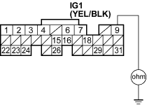

Is there continuity?
YES - Go to step 27.
NO - Replace the component that made continuity to body ground go away when disconnected. If the item is the ECM, substitute a known-good ECM and recheck (see page 11-5). If symptom/indication goes away, replace the original ECM.
Also replace the No. 6 ECU (ECM) (15 A) fuse.
- Disconnect the connectors of all these components.
- PGM-FI main relay 2
- ECM connector A (31P)
- Injectors
- Idle air control (IAC) valve
- Top dead centre (TDC) sensor
- Crankshaft position (CKP) sensor
- Check for continuity between the PGM-FI main relay 1 4P connector terminal No. 1 and body ground.

Is there continuity?
YES - Repair short in the wire between the PGM-FI main relay 1 and each item. Also replace the No. 6 ECU (ECM) (15A) fuse. 
NO - Replace the PGM-FI main relay 1. Also replace the No 6 ECU (ECM) (15A) fuse.

- Inspect the No. 17 FUEL PUMP (15A) fuse in the under-dash fuse/relay box.
Is the fuse OK?
YES - Go to step 41.
NO - Go to step 30.
- Remove the blown No. 17 FUEL PUMP (15A) fuse in the under-dash fuse/relay box.
- Disconnect ECM connector E (31P).
- Check for continuity between ECM connector terminal E9 and body ground.
ECM CONNECTOR E (31P)

Wire side of female terminals
Is there continuity?
YES - Go to step 33.
NO - Replace the No. 17 FUEL PUMP (15 A) fuse, and substitute a known-good ECM and recheck (see page 11-5). If symptom/indication goes away, replace the original ECM.